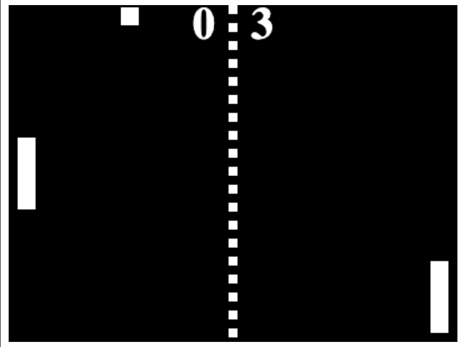
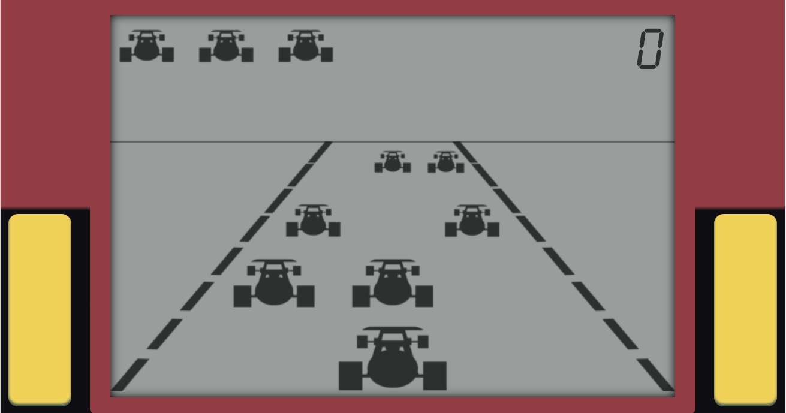
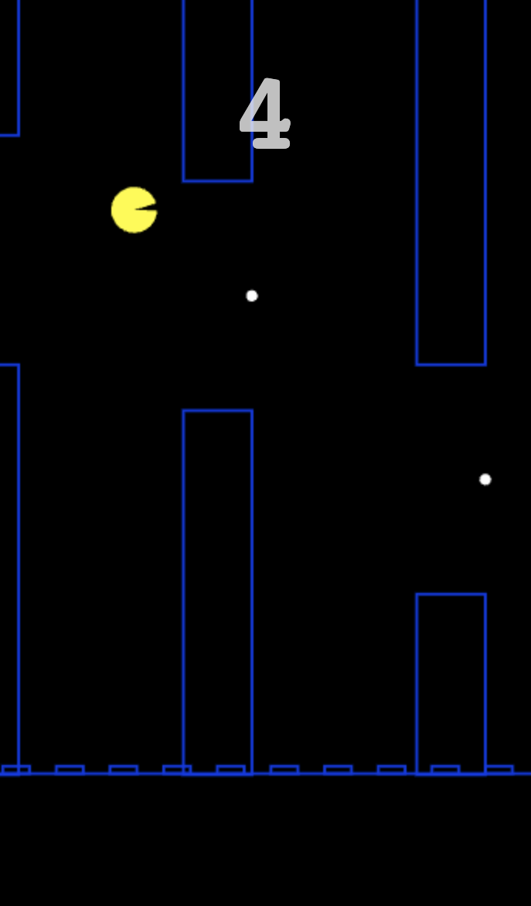
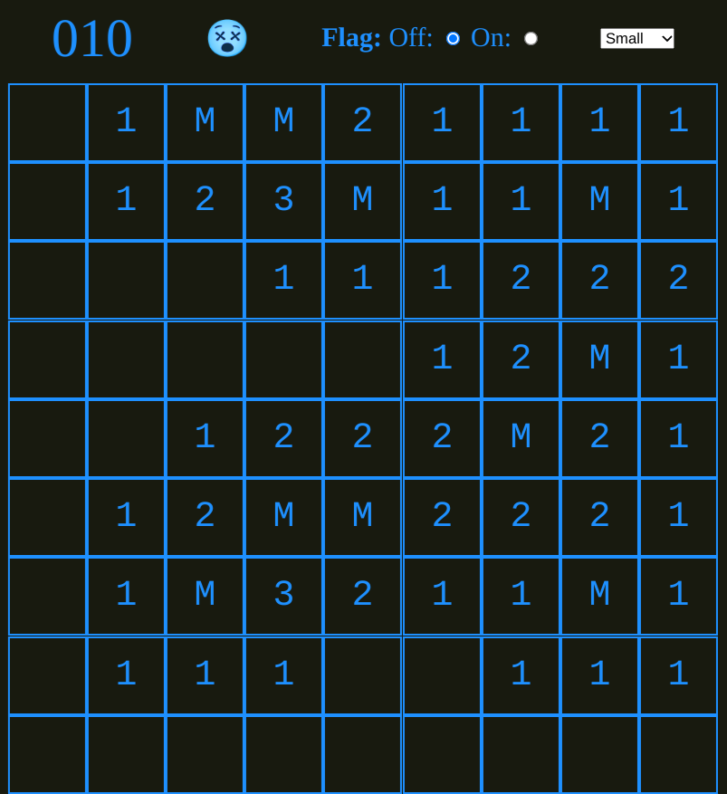
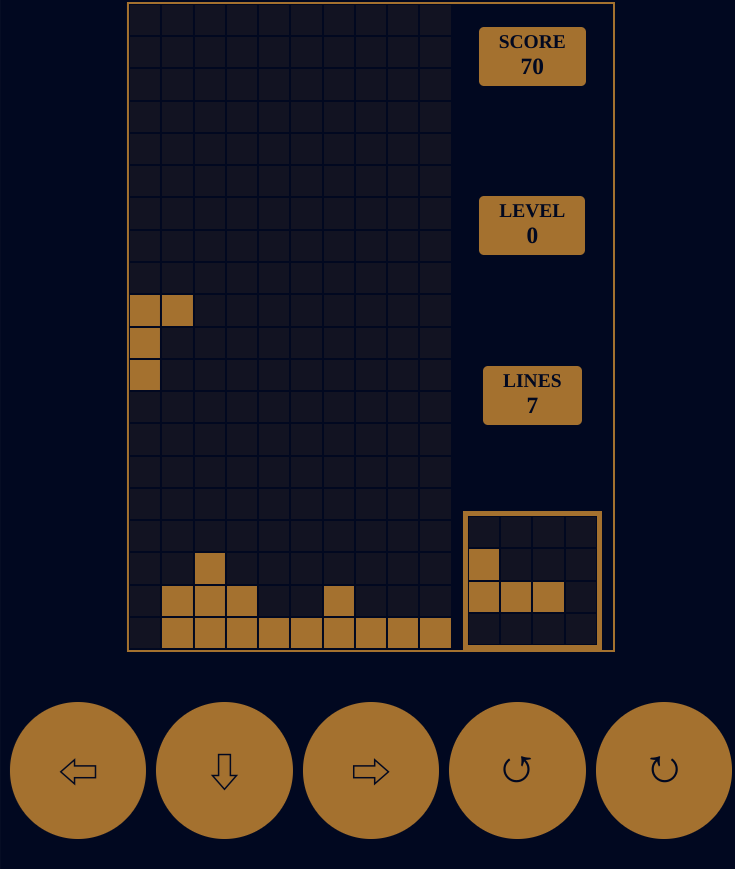
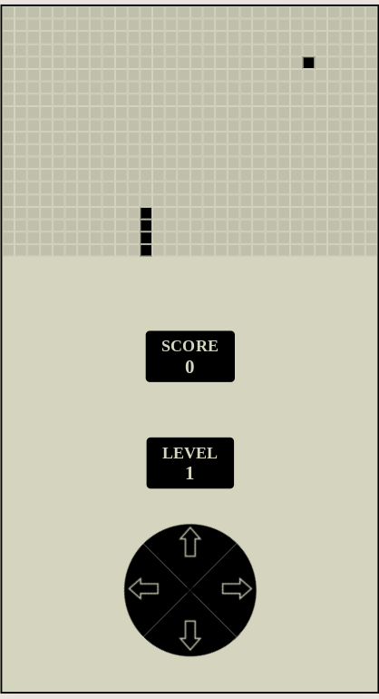

Games
by Ioannis Varouchakis
PongNM (Pong Not iMproved)
A simple Pong type of game, that can be played against another player, or a very simple AI with 3 different styles of play. Originally created in 2013, a few code improvements were made in 2023.

(link)
Retro Formula One
A clone of probably the first game console that I ever had (and lost decades ago). Recreated using information from the imperfect medium called memory, and a bit of searching on the internet for similar games. Originally created in 2014, a few code improvements were made in 2023.

(link)
Blip n Flap
Flappy Bird clone, with pac man styled graphics. Originally created in 2014, a few code improvements were made in 2023.

(link)
Grid Scout
Mine sweeper clone, created in 2023. Basically a test on using Custom Elements without the help of any library, only applying some "blueprints".

(link)
Test Bricks
Bricks game, created in 2023. Same as gridscout, a test on using Custom Elements without the help of any library, only applying some "blueprints".

(link)
Snake
Snake game, created in 2024. Basically a low-hanging fruit, after having created Test Bricks.

(link)